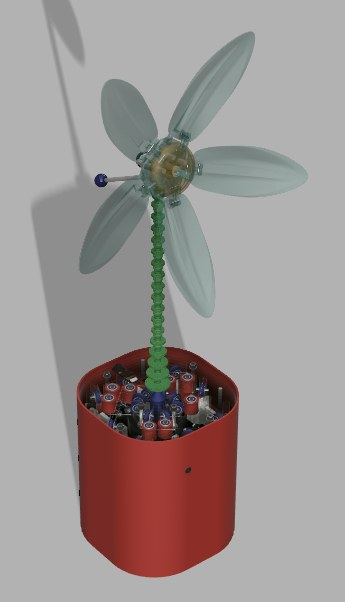
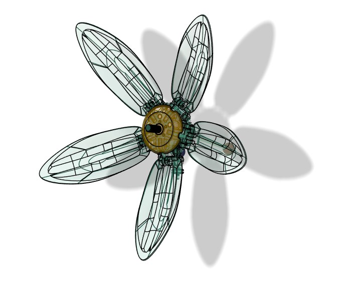
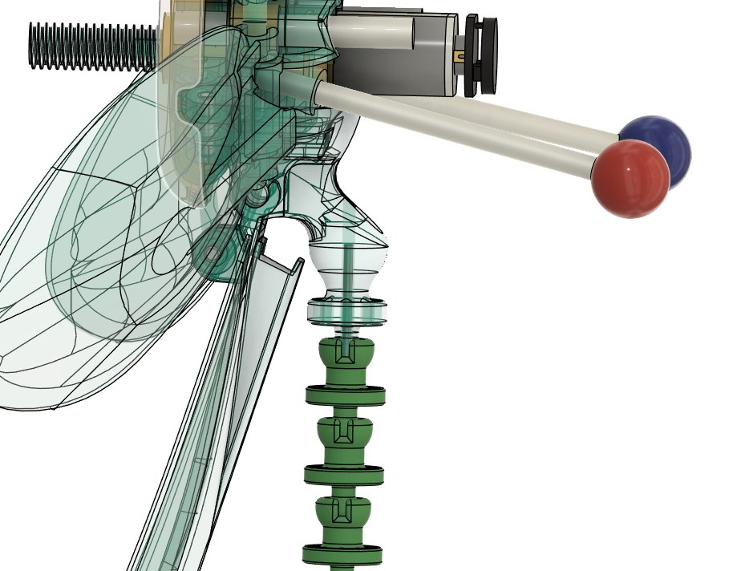
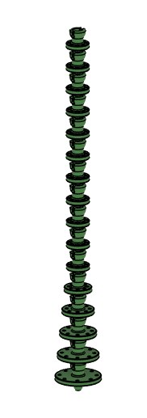
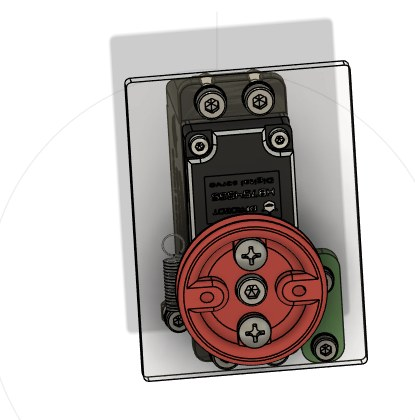
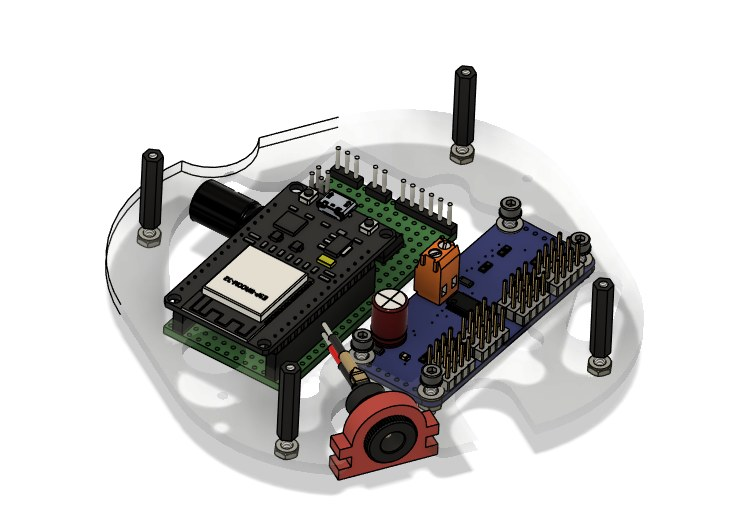
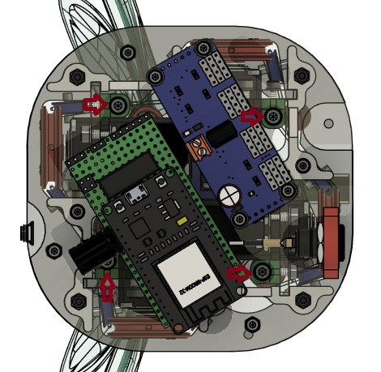
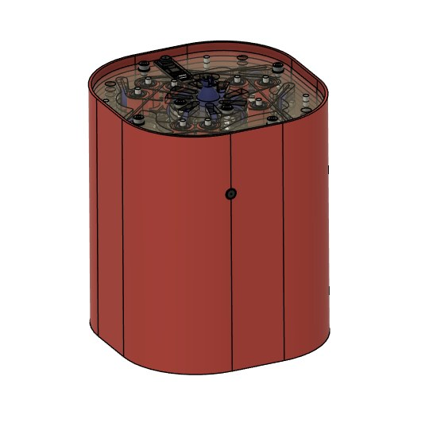
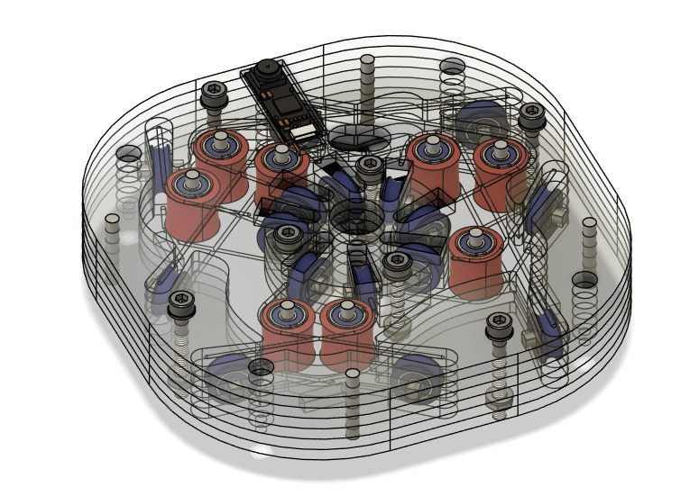

Designed, fabricated, and programmed a tendon-driven, continuum-stem animatronic flower robot from the ground up -- the physical embodiment for an LLM-driven mental health companion research platform in the lab's Human-Robot Interaction research program. The robot communicates non-verbally through petal color, petal-angle motion, and a dual-stage continuum-style stem, with no anthropomorphic face or voice.
CAD in Fusion 360, laser-cut acrylic subframes, and 3D-printed structural parts. The stem is a dual-stage tendon-driven continuum mechanism -- a stack of ball-and-socket joints strung with four tendons -- that bends smoothly rather than pivoting at discrete joints. The five-petal head carries its own independently addressable LED array and is driven off the stem by a geared N20 motor with an encoder-based position loop. The base electronics plate and outer pot were both laser-cut and 3D-printed to spec, with the full bill of materials and cut files kept in the repo alongside the CAD source so the build is reproducible from scratch.
Built the full ROS 2 (Humble) host stack: flower_gui (a Tkinter control
panel with manual and kinematic modes, a live 3D bend preview, and a set of built-in guided
breathing routines the flower can perform on its own), continuum_controller_node
(a kinematic solver converting bend targets into antagonistic servo-pair angles), and
flower_mux -- a mode-aware multiplexer that merges GUI and kinematic command
sources into one authoritative RobotCommand stream, carefully preserving the
GUI's LED and motor state even while kinematic mode is driving the servos. A
micro-ROS agent bridges that final stream to the ESP32 over Wi-Fi, and a
Foxglove bridge exposes every topic for live debugging.
Wrote the ESP32 firmware (PlatformIO/C++) that receives the merged command stream and drives the hardware every loop iteration: four servos through a PCA9685 I2C driver (smoothly S-curve-eased toward each commanded angle over a requested time window), the petal LED array via FastLED, and the N20 base motor through an encoder-feedback position loop. Connectivity is handled by a self-healing Wi-Fi/micro-ROS reconnection routine that resolves the host over mDNS and automatically re-establishes the ROS session if the link drops -- with a visible LED status animation during each connection phase -- and debug telemetry is published back to the host for troubleshooting.
Implemented two independent OpenCV-based perception nodes, each on its own USB camera.
localization_tracker detects red/blue marker balls with HSV color segmentation,
shape-filters candidates by circularity and solidity to reject glare, corrects for lens
distortion using calibrated camera intrinsics, and smooths the published 3D position with a
per-color exponential moving average. face_tracker uses RetinaFace to find the
nearest face and publish its pan/tilt offset. Neither is wired into closed-loop control yet --
they lay the groundwork for future localization- and attention-based behaviors.
Beyond manual and LLM-driven control, the GUI ships with pre-programmed guided routines (e.g. box breathing) that animate the flower's petals and color through a fixed rhythm on their own -- a direct, concrete link between the robot's movement vocabulary and the mental health use case it's built around.
Authored a 27-page technical handbook -- assembly instructions, tendon tensioning/repair procedures, full software architecture, host setup, and day-to-day startup/shutdown -- plus the bill of materials and laser-cut sketches, so the build is fully reproducible by future lab members without needing to ask me directly.







